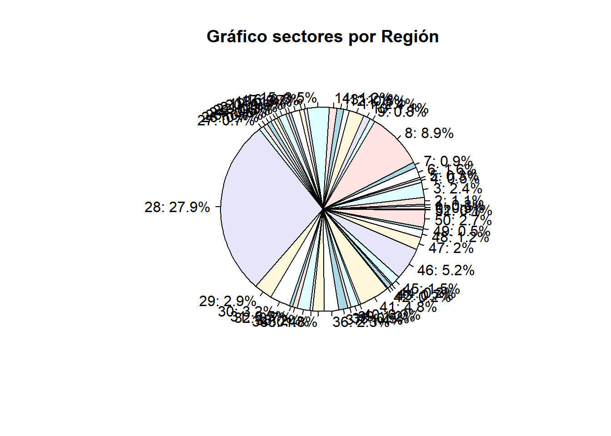
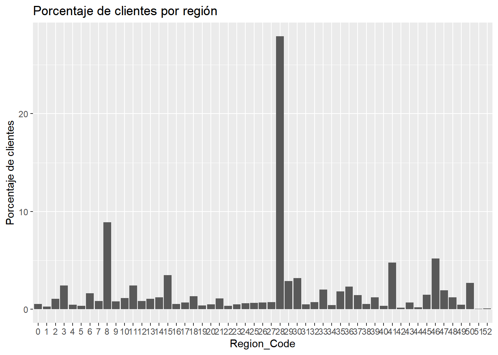
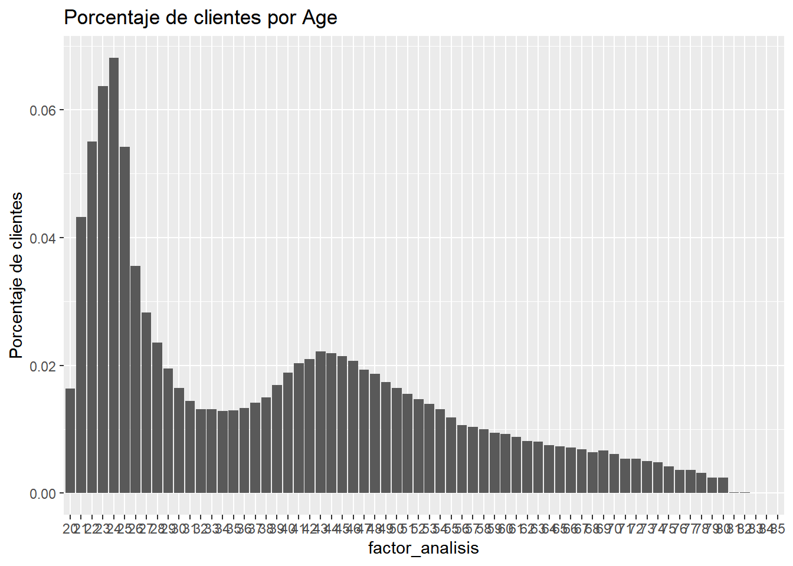
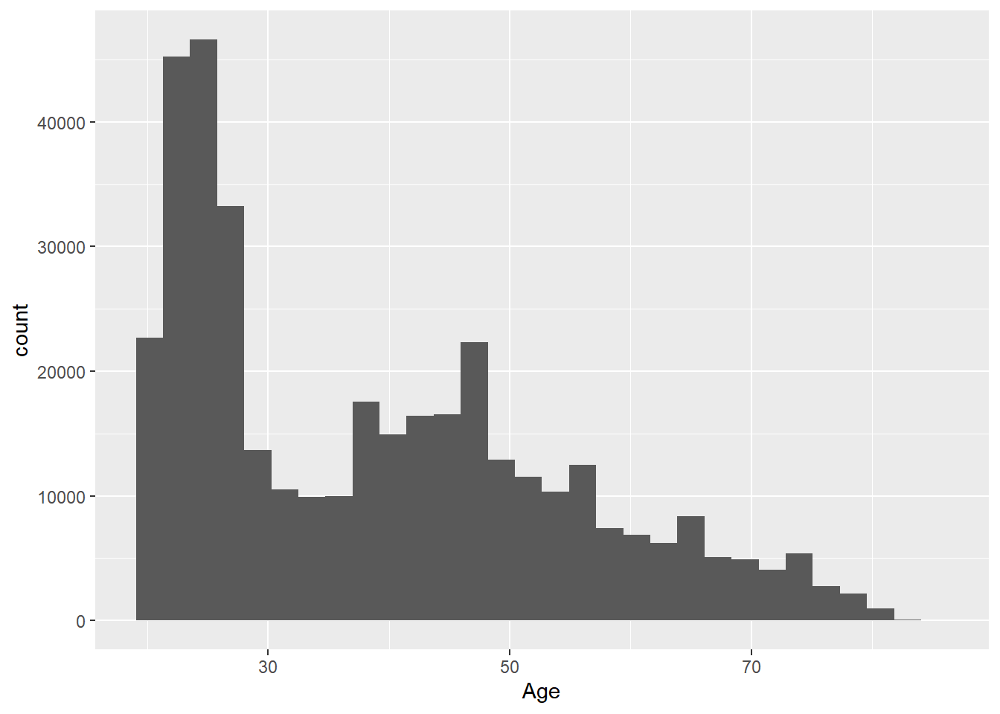
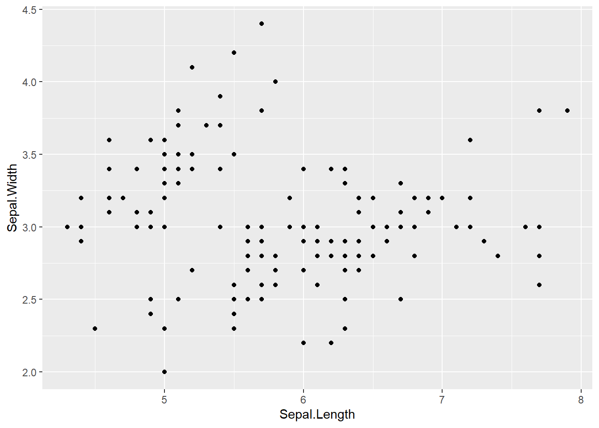

La práctica totalidad de lo que se ha trabajado hasta el momento se resume en este capítulo. El análisis EDA (Exploratory Data Analysis) es el primer paso que ha de seguir un científico de datos cuando se aproxima a los datos, pero el científico de datos tiene que saber como pueden ser sus datos, que tipo de variables los componen, el nivel al que se encuentran los registros, que problemas pueden presentar sus datos o como resumir esa información, es decir, necesita conocer en profundidad todos los capítulos anteriores.
Para realizar este tipo de análisis R dispone de distintas librerías, algunas de ellas son:
El propio científico de datos debería tener sus propias herramientas descriptivas, sin embargo, en este capítulo se empleará DataExplorer por rapidez de realización, sencillez de uso y fácil interpretación de la salida que ofrece.
En la línea habitual se trabaja con el caso práctico de la campaña de venta cruzada de una empresa aseguradora.
library(tidyverse)
train <- read.csv("./data/train.csv")
head(train,5)## id Gender Age Driving_License Region_Code Previously_Insured Vehicle_Age
## 1 1 Male 44 1 28 0 > 2 Years
## 2 2 Male 76 1 3 0 1-2 Year
## 3 3 Male 47 1 28 0 > 2 Years
## 4 4 Male 21 1 11 1 < 1 Year
## 5 5 Female 29 1 41 1 < 1 Year
## Vehicle_Damage Annual_Premium Policy_Sales_Channel Vintage Response
## 1 Yes 40454 26 217 1
## 2 No 33536 26 183 0
## 3 Yes 38294 26 27 1
## 4 No 28619 152 203 0
## 5 No 27496 152 39 0En el capítulo anterior ya aparecieron posibles problemas, no sólo de datos, también de negocio, por ese motivo se insiste en la idea de dar importancia al problema de negocio que está abordando el científico de datos.
El primer paso es conocer el número de observaciones con las que trabajamos, como son las variables del conjunto de datos y saber si es posible prescindir de algunas, para ello se empleará la función introduce.
library(DataExplorer)
introduce(train)## rows columns discrete_columns continuous_columns all_missing_columns
## 1 381109 12 3 9 0
## total_missing_values complete_rows total_observations memory_usage
## 1 0 381109 4573308 27443752Este análisis se puede acompañar de una visión gráfica.
plot_intro(train)
Disponemos de 381109 observaciones y 12 variables donde un 25% son factores frente al 75% de numéricas, todos las columnas están completas y no hay observaciones sin datos por lo que no es necesaria una limpieza previa. Observemos a continuación que variables tiene el conjunto de datos.
plot_str(train)Se observa que hay variables como Previously_Insured, Region_Code o Policy_Sales_Channel que son numéricas y serían susceptibles de ser factores. Los propios nombres de variables y sus descripciones tienen que ser de ayuda en estos primeros acercamientos. El siguiente paso es describir las variables en función del tipo. Si la variable es numérica se recomendaba la realización de histogramas, con plot_histogram se automatiza esta labor.
plot_histogram(train, ncol = 3)
Se disponen de 6 variables numéricas dispuestas en dos filas con ncol=3 columnas. En este punto el científico de datos ya debe empezar a describir comportamientos dando ese sentido de negocio. Veamos variable por variable:
De este modo es como se recomienda el acercamiento a los datos, buscando ese sentido de los posibles resultados y estudiando las formas, los posibles valores que toman las variables. En este primer paso ya es necesario modificar los datos de trabajo.
train <- train %>%
mutate(Policy_Sales_Channel = as.character(Policy_Sales_Channel),
Region_Code = as.character(Region_Code))Las siguientes variables a analizar serán los factores, se emplea la función plot_bar.
plot_bar(train)## 2 columns ignored with more than 50 categories.
## Region_Code: 53 categories
## Policy_Sales_Channel: 155 categories
En este caso DataExplorer nos arroja un warning que da una pista sobre un problema que tiene nuestro conjunto de datos de trabajo:
2 columns ignored with more than 50 categories. Region_Code: 53 categories Policy_Sales_Channel: 155 categories
Hay dos columnas que se considera innecesario representar, justo los factores que se acaban de crear. Estas variables son susceptibles de ser agrupadas pero no han de ser tratadas como numéricas. En cuanto al resto de variables:
A continuación se resuelven algunos de los problemas planteados. Se empieza por la variable Vehicle_Age, para reordenar factores en R se cuenta con la función factor, se podría hacer:
table(train$Vehicle_Age)##
## < 1 Year > 2 Years 1-2 Year
## 164786 16007 200316train <- train %>% mutate(Vehicle_Age=factor(Vehicle_Age, c('< 1 Year','1-2 Year','> 2 Years')))
table(train$Vehicle_Age)##
## < 1 Year 1-2 Year > 2 Years
## 164786 200316 16007Sin embargo, en este punto se plantea una recomendación. Cuando se trabaja con datos en bruto y estos datos son analizados y clasificados es bueno crear una nueva variable y jugar con prefijos para determinar si esa variable está trabajada o no. En este caso, tratándose de un factor, se emplea el prefijo fr_ de factor reclasificado, en el ejemplo que se está trabajando:
train <- train %>% mutate(fr_vehicle_age = factor(Vehicle_Age, c('< 1 Year','1-2 Year','> 2 Years')))
train %>% group_by(fr_vehicle_age) %>% summarise(conteo=n()) %>%
ggplot(aes(x=fr_vehicle_age, y=conteo)) + geom_bar(stat = 'identity')
Con la variable Driving_License se plantean dos posibles soluciones, eliminar esos pocos registros sin licencia de conducción o directamente ignorar la variable. De momento no se eliminan esos registros. El resto de factores que a priori no parecen presentar problema se renombran.
train <- train %>% rename(
fr_gender = Gender,
fr_vehicle_damage = Vehicle_Damage,
fr_previouly_insured = Previously_Insured)Quedan pendientes los dos factores con un gran número de niveles. En el caso de Region_Code se sabe que los datos provienen de una aseguradora española y se tienen 52 códigos, es evidente que hace mención a las provincias españolas:
train %>% group_by(Region_Code=as.factor(Region_Code)) %>% summarise(conteo=n()) %>%
ggplot(aes(x=reorder(Region_Code,conteo), y =conteo)) + geom_bar(stat = 'Identity') + coord_flip() 
Se observa que los niveles 28 y 8 son los que más encuestados tienen, en el caso de las provincias españolas hacen mención a Madrid y Barcelona. En este caso se puede sugerir una agrupación con los 10 niveles más representativos y un resto.
provincias <- train %>% group_by(Region_Code) %>% summarise(conteo=n()) %>%
arrange(desc(conteo)) %>% mutate(fr_region_code = case_when(
row_number() <= 10 ~ Region_Code,
TRUE ~ 'Resto'))
train <- train %>% left_join(provincias)## Joining, by = "Region_Code"Otra posible agrupación tendría ese sentido de negocio.
train <- train %>% mutate(fr_region_code2 = case_when(
Region_Code == 28 ~ 'Madrid',
Region_Code == 8 ~ 'Barcelona',
TRUE ~ 'Resto'))Sin embargo, la mejor agrupación será aquella que una provincias con similar comportamiento ante un problema o ante la respuesta de un problema. En la misma situación está la variable Policy_Sales_Channel donde no tenemos ese conocimiento de negocio necesario para proponer una agrupación de niveles del factor. En capítulos posteriores se retomará este problema y se propondrá una solución.
El análisis EDA permite al científico de datos esa primera aproximación a los datos, pero esos datos se quieren emplear para resolver un problema y de momento sólo se está en una fase descriptiva. La librería DataExplorer además de tener diversas funciones para realizar estos descriptivos tiene la posibilidad de automatizar un reporte con esa aproximación mediante la función create_report. En cualquier caso, se recomienda que el analista disponga de sus propias herramientas.